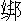

瑞氣籠清曉。捲珠簾，次第笙歌，一時齊奏。無限神仙離蓬島，鳳駕鸞車初到。見擁個、仙娥窈窕。玉珮玎鐺風縹緲，望嬌姿、一似垂楊裊。天上有，世間少。劉郎正是當年少。更那堪，天教付與，最多才貌。玉樹瓊枝相映耀，誰與安排忒好？有多少、風流歡笑。直待來春成名了，馬如龍、綠緩欺芳草。同富貴，又偕老。
這首詞名《賀新郎》，乃是宋時辛稼軒為人家新婚吉席而作。天下喜事，先說洞房花燭夜，最為熱鬧。因是這熱鬧，就有趁哄打劫的了。吳興安吉州富家新婚，當夜有一個做賊的，趁著人雜時節，溜將進去，伏在新郎的牀底下了，打點人靜後，出來捲取東西。怎當這人家新房裡頭，一夜停火到天明。牀上新郎新婦，雲雨歡濃了一會，枕邊切切私語，你問我答，煩瑣不休。說得高興，又弄起那話兒來，不十分肯睡。那賊躲在牀下，只是聽得肉麻不過，卻是不曾靜悄。又且燈火明亮，氣也喘不得一口，何況脫身出來做手腳？只得耐心伏著不動。水火急時，直等日間牀上無人時節，就牀下暗角中撤放。如此三日夜，畢竟下不得手，肚中餓得難堪。顧不得死活，聽得人聲略定，拼著命魆魆走出，要尋路逃去。火影下早被主家守宿人瞧見，叫一聲「有賊！」前後人多扒起來，拿住了。先是一頓拳頭腳尖，將繩捆著，誰備天明送官。賊人哀告道：「小人其實不曾偷得一毫物事，便做道不該進來，適間這一頓臭打，也拆算得過了。千萬免小人到官，放了出去，小人自有報效之處。」主翁道：「誰要你報效！你每這樣歹人，只是送到官，打死了才幹淨。」賊人道：「十分不肯饒我，我到官自有說話。你每不要懊悔！」主翁見他說得倔強，更加可恨，又打了幾個巴拿。
捆到次日，申破了地方，一同送到縣裡去。縣官審問時，正是賊有賊智，那賊人不慌不忙的道：「老爺詳察，小人不是個賊，不要屈了小人！」縣官道：「不是賊，是甚麼樣人，躲在人家牀下？」賊人道：「小人是個醫人，只為這家新婦，從小有個暗疾，舉發之時，疼痛難當，惟有小人醫得，必要親手調治，所以一時也離不得小人。今新婚之夜，只怕舊疾舉發，暗約小人隨在房中，防備用藥，故此躲在牀下。這家人不認得，當賊拿了。」縣官道：「那有此話？」賊人道：
「新婦乳名瑞姑，他家父親，寵了妾生子女，不十分照管他。母親與他一路，最是愛惜。所以有了暗疾，時常叫小人私下醫治。今若叫他到官，自然認得小人，才曉得不是賊。」知縣見他丁一確二說著，有些信將起來，道：「果有這等事，不要冤屈了平人。而今只提這新婦當堂一認就是了。」
原來這賊躲在牀下這三夜，備細聽見牀上的說話。新婦果然有些心腹之疾，家裡常醫的。因告訴丈夫，被賊人記在肚裡，恨這家不饒他，當官如此攀出來。不惟可以遮飾自家的罪，亦且可以弄他新婦到官，出他家的丑。這是那賊人憊賴之處。那曉縣官竟自被他哄了，果然提將新婦起來。富家主翁急了，負極去求免新婦出官。縣官那裡肯聽？富家翁又告情願不究賊人罷了，縣官大怒道：「告別人做賊也是你，及至要個證見，就說情願不究，可知是誣賴平人為盜。若不放新婦出來質對，必要問你誣告。」富家翁計無所出，方悔道：「早知如此，放了這猾賊也罷，而今反受他累了。」
衙門中一個老吏，見這富家翁徬徨，問知其故，便道：「要破此猾賊也不難，只要重重謝我。我去稟明瞭，有方法叫他伏罪。」富家翁許了謝禮十兩。老吏去稟縣官道：「這家新婦初過門，若出來與賊盜同辨公庭，恥辱極矣！老爺還該惜具體面。」縣官道：「若不出來，怎知賊的真假？」老吏道：「吏典到有一個愚見。想這賊潛藏內室，必然不曾認得這婦人的，他卻混賴其婦有約。而今不必其婦到官，密地另使一個婦人代了，與他相對。他認不出來，其誣立見，既可以辨賊，又可以周全這家了。」縣官點頭道：「說得有理。」就叫吏典悄地去喚一娼婦打扮了良家，包頭素衣，當賊人面前帶上堂來，高聲稟道：「其家新婦瑞姑拿到！」賊人不知是假，連忙叫道：「瑞姑，瑞姑，你約我到房中治病的，怎麼你公公家裡拿住我做賊送官，你就不說一聲？」縣官道：「你可認得正是瑞姑了麼？」賊人道：「怎麼不認得？從小認得的。」縣官大笑道：「有這樣奸詐賊人，險被你哄了。原來你不曾認得瑞姑，怎賴道是他約你醫病？這是個娼妓，你認得真了麼？」賊人對口無言，縣官喝叫用刑。賊人方才訴說不曾偷得一件，乞求減罪。縣官打了一頓大板，枷號示眾。因為無贓，恕其徒罪。富家翁新婦方才得免出官。這也是新婚人家一場大笑話。
先說此一段做個笑本。小子的正話，也說著一個新婚人家，弄出好些沒頭的官司，直到後來方得明白。
本為花燭喜筵，弄作是非苦海。
不因天網恢恢，啞謎何對得解？
卻說直隸蘇州府嘉定縣有一人家，姓鄭，也是經紀行中人，家事不為甚大。生有一女，小名蕊珠，這倒是個絕世佳人，真個有沉魚落雁之容，閉月羞花之貌。許下本縣一個民家姓謝，是謝三郎，還未曾過門。這個月裡揀定了吉日，謝家要來取去。三日之前，蕊珠要整容開面，鄭家老兒去喚整容匠。原來嘉定風俗，小戶人家女人蓖頭剃臉，多用著男人。其時有一個後生，姓徐名達，平時最是不守本分，心性奸巧好淫，專一打聽人家女子，那家生得好，那家生得醜。因為要像心看著內眷，特特去學了那櫛工生活，得以進入內室。又去做那婚筵茶酒，得以窺看新人。如何叫得茶酒？即是那邊儐相之名，因為贊禮時節在旁高聲「請茶！」「請酒！」多是他口裡說的，所以如此稱呼。這兩項生意，多傍著女人行止，他便一身兼做了。此時鄭家就叫他與女兒蕊珠開面。徐達帶了蓖頭傢伙，一逕到鄭家內裡來。蕊珠做女兒時節，徐達未曾見一面，而今卻叫他整客，煞是看得親切。徐達一頭動手，一頭覷玩，身子如雪獅子向火，看看軟起來。那話兒如吃石髓的海燕，看看硬起來。可惜礙著前後有人，恨不就勢一把抱住弄他一會。鄭老兒在旁看見模樣，識破他有些輕薄意思。等他用手一完，急打發他出到外邊來了。
徐達看得渾身似火，背地裡手銃也不知放了幾遭，心裡掉不下。曉得嫁去謝家，就設法到謝家包做了吉日的茶酒。到得那日，鄭老兒親送女兒過門。只見出來迎接的儐相，就是前日的櫛工徐達。心下一轉道：「原來他又在此。」比至新人出轎，行起禮來，徐達沒眼看得，一心只在新娘子身上。口裡哩連羅連，把禮數多七顛八倒起來。但見：
東西錯認，左右亂行。信口稱呼，親翁忽為親媽：無心贊喝，該「拜」反做該「興」。見過泰山，又請岳翁受禮；參完堂上，還叫父母升廳。不管嘈壞郎君，只是貪看新婦。
徐達亂嘈嘈的行過了許多禮數，新娘子花燭已過，進了房中，算是完了，只要款待送親吃喜酒。
這謝家民戶人家，沒甚人力，謝翁與謝三郎只好陪客在外邊，裡頭媽媽率了一二個養娘，親自廚房整酒。有個把當直的，搬東搬西，手忙腳亂，常是來不迭的。徐達相禮，到客人坐定了席，正要「請湯」、「請酒」是件贊唱，忽然不見了他。兩三次湯送到，只得主人自家請過吃了。將至終席，方見徐達慌慌張張在後面走出來，喝了兩句。比至酒散，謝翁見茶酒如此參前失後，心中不喜，要叫他來埋怨幾句，早又不見。當值的道：「方才往前面去了。」謝翁道：「怎麼尋了這樣不曉事的？如此淘氣！」親家翁不等茶酒來贊禮，自起身謝了酒。
謝三郎走進新房，不見新娘子在內，疑他牀上睡了，揭帳一看，仍然是張空牀。前後照看，竟不見影。跑至廚房間人時，廚房中人多嚷道：「我們多只在這裡收拾，新娘子花燭過了，自坐房中，怎麼倒來問我們？」三郎叫了當直的後來各處找尋，到後門一看，門又關得好好的。走出堂前說了，合家驚惶。當直的道：「這個茶酒、一向不是個好人，方才喝禮時節看他沒心沒想，兩眼只看著新人，又兩次不見了他，而今竟不知那裡去了。莫不是他有甚麼奸計，藏過了新人麼？」鄭老兒道：「這個茶酒，元不是好人。小女前日開面也是他。因見他輕薄態度，正心裡怪恨，不想宅上茶酒也用著他。」鄭家隨來的僕人也說道：「他元是個游嘴光棍，這蓖頭贊禮，多是近新來學了攛哄過日子的。畢竟他有緣故，去還不遠，我們追去。」謝家當直的道：「他要內裡拐出新人，必在後門出後巷裡去了。方才後門關好，必是他復身轉來關了，使人不疑。所以又到堂前敷衍這一回，必定從前面轉至後巷去了，故此這會不見，是他無疑。」
此時是新婚人家，篦子火把多有在家裡，就每人點著一根。兩家僕人與同家主共是十來個，開了後門，多望後巷裡起來。原來謝家這條後門路，是一個直巷，也無彎曲，也無旁路。火把照起，明亮猶同白日，一望去多是看見的。遠遠見有兩三個人走，前頭差一段路，去了兩個，後邊有一個還在那裡。疾忙趕上，拿住火把一照，正是徐茶酒。問道：「你為何在這裡？」徐達道：「我有些小事，等不得酒散，我要回去。」眾人道：「你要回去，直不得對本家說聲？況且好一會不見了你，還在這裡行走，豈是回去的？你好好說，拐將新娘子那裡去了？」徐達支吾道：「新娘子在你家裡，豈是我掌禮人包管的？」眾人打的打，推的推，喝道：「且拿這游嘴光棍到家裡拷問他出來！」一群人擁著徐達，到了家裡。兩家親翁一同新郎各各盤問，徐達只推不知。一齊道：「這樣頑皮賴骨，私下問他，如何肯說！

他在柱上，待天明送到官去，難道當官也賴得？」遂把徐達做一團捆住，只等天明。此時第一個是謝三郎掃興了。不能勾握雨攜雲，整備著鼠牙雀角。
喜筵前在喚新郎，洞房中依然獨覺。
眾人鬧鬧嚷嚷簇擁著徐達，也有嚇他的，也有勸他的，一夜何曾得睡？徐達只不肯說。
須臾，天已大明，謝家父子教眾人帶了徐達，寫了一紙狀詞，到縣堂上告准，面稟其故。知縣驚異道：「世間有此事？」遂喚徐達問道：「你拐的鄭蕊珠那裡去了？」徐達道：「小人是婚筵的茶酒，只管得行禮的事，怎曉得新人的去向？」謝公就把他不辭而去，在後巷趕著之事，說了一遍。知縣喝叫用刑起來，徐達雖然是游花光棍，本是柔脆的人，熬不起刑。初時支吾兩句，看看當不得了，只得招道：「小人因為開面時，見他美貌，就起了不良之心。曉得嫁與謝家，謀做了婚筵茶酒。預先約會了兩個同伴埋伏在後門了。趁他行禮已完，外邊只要上席，小人在裡面一看，只見新人獨坐在房中，小人哄他還要行禮。新人隨了小人走出，新人卻不認得路，被小人引他到了後門，就把新人推與門外二人。新人正待叫喊，卻被小人關好了後門，望前邊來了。仍舊從前邊抄至後巷，趕著二人。正要奔脫，看見後面火把明亮，知是有人趕來。那兩個人顧不得小人，竟自飛跑去了。小人有這個新人在旁，動止不得。恰好路旁有個枯井，一時慌了，只得抱住了他，攛了下去。卻被他們趕著，拿了送官。這新人現在井中。只此是實。」知縣道：「你在他家時，為何不說？」徐達道：「還打點遮掩得過，取他出井來受用。而今熬刑不起，只得實說了。」知縣寫了口詞，就差一個公人押了徐達，與同謝、鄭兩家人，快到井邊來勘實回話。
一行人到了井邊。鄭老兒先去望一望，井底下黑洞洞，不見有甚聲響。疑心女兒此時畢竟死了，扯著徐達狠打了幾下，道：「你害我女兒死了，怕不償命！」眾人勸住道：「且撈了起來，不要廝亂，自有官法處他。」鄭老兒心裡又慌又恨，且把徐達咬住一塊肉，不肯放。徐達殺豬也似叫喊。這邊謝翁叫人停當了竹兜繩索，一面下井去救人。一個膽大些的家人，紮縛好了，掛將下去。井中無人，用手一模，果然一個人蹲倒在裡面。推一推看，已是不動的了。抱將來放在兜中，弔將上去。眾人一看，那裡是甚麼新娘子？卻是一個大鬍鬚的男子，鮮血模糊，頭多打開的了。眾人多吃了一驚。鄭老兒將徐達又是一巴拿，道：「這是怎麼說？」連徐達看見，也嚇得呆了。謝翁道：「這又是甚麼蹺蹊的事？」對了井中問下邊的人道：「裡頭還有人麼？」井裡應道：「並無甚麼了，接了我上去。」隨即放繩下去，接了那個家人上來。一齊問道：「井中還有甚麼？」家人道：「止有些石塊在內，是一個乾枯的井。方才黑洞洞地摸起來的人，不知死活，可正是新娘子麼？」眾人道：「是一個死了的鬍子，那裡是新人？你看麼！」押差公人道：「不要鳥亂了，回覆官人去，還在這個入娘的身上尋究新人下落。」
鄭、謝兩老兒多道：「說得是。」就叫地方人看了屍首，一同公人去稟白縣官。知縣問徐達道：「你說把鄭蕊珠推在井中，而今井中卻是一個男屍，且說鄭蕊珠那裡去了？這屍是那裡來的？」徐達道：「小人只見後邊趕來，把新人推在井裡是實。而今卻是一個男屍，連小人也猜不出了。」知縣道：「你起初約會這兩個同伴，叫做甚麼名字？必是這二人的緣故了。」徐達道：「一個張寅，一個李卯。」知縣寫了名字住址，就差人去拿來。甕中捉鱉，立時拿到，每人一夾棍，只招得道：「徐達相約後門等待，後見他推出新人來，負了就走。徐達在後趕來，正要同去。望見後面火把齊明，喊聲大震，我們兩個膽怯了，把新人掉與徐達，只是拼命走脫了。已後的事，一些也不知。」又對著徐達道：「你當時將的新人，那裡去了？怎不送了出來，要我們替你吃苦？」徐達對口無言。知縣指著徐達道：「還只是你這奴才奸巧！」喝叫再夾起來，徐達只喊得是小人該死。說來說去，只說到推在井中，便再說不去了。
知縣便叫鄭、謝兩家父親與同媒的人等，又拘齊兩家左右鄰里，備細訪問。多只是一般不知情，沒有甚麼別話，也沒有一個認得這屍首的。知縣出了一張榜文，召取屍親家屬認領埋葬，也不曾有一個說起的。鄭、謝兩家自備了賞錢，知縣又替他寫了榜文，訪取鄭蕊珠下落，也沒有一個人曉得影響的。知縣斷決不開，只把徐達收在監中，五日一比。謝三郎苦毒，時時催稟。縣官沒法，只得做他不著，也不知打了多多少少。徐達起初一時做差了事，到此不知些頭腦，教他也無奈何，只好巴過五口，吃這番痛棒。也沒個打聽的去處，也沒個結局的法兒，真正是沒頭的公事，表過不提。
再說鄭蕊珠那晚被徐達拐至後門，推與二人，便見把後門關了，方曉得是歹人的做作。欲待叫著本家人，自是新來的媳婦，不曾知道一個名姓，一時叫不出來。亦且門已關了，便口裡喊得兩句「不好了」，也沒人聽得。那些後生背負著只是走，心裡正慌，只見後面趕來，兩個人撇在地下竟自去了。那個徐達一把抱來，丟在井裡。井裡無水，又不甚深，只跌得一下，毫無傷損。聽是上面眾人喧嚷，曉得是自己家人，又火把齊明，照得井裡也有光。鄭蕊珠負極叫喊救人，怎當得上邊人拿住徐達，你長我短，嚷得一個不耐煩。婦人聲音，終久嬌細，又在井裡，那個聽見？多簇擁著徐達，吆吆喝喝一路去了。鄭蕊珠聽得人聲漸遠，只叫得苦，大聲啼哭。看看天色明亮，蕊珠想道：「此時上邊未必無人走動。」高喊兩聲救人！又大哭兩聲，果然驚動了上邊兩人。只因這兩個人走將來，有分教：
黃塵行客，翻為墜井之魂；綠鬢新人，竟作離鄉之婦。
說那兩個人，是河南開封府報縣客商。一個是趙申一個是錢已。合了本錢，同到蘇、松做買賣。得了重利，正要回去。偶然在此經過，聞得啼哭喊叫之聲卻在井中出來，兩個多走到井邊，望下一看。此時天光照下去，隱隱見是個女人。問道：「你是甚麼人在這裡頭？」下邊道：「我是此間人家新婦，被強盜劫來丟在此的。快快救我出來，到家自有重謝。」兩人聽得，自商量道：「從來說救人一命，勝造七級浮屠。況是個女人，怎能勾出來？沒人救他，必定是死。我每撞著也是有緣。行囊中有長繩，我每墜下去救了他起來。」趙申道：「我溜撤些，等我下去。」錢已道：「我身子坌，果然下去不得，我只在上邊弔箸繩頭，用些空氣力罷。」也是趙申悔氣到了，見是女子，高興之甚。擅拳裸袖，把繩縛在腰間，雙手弔著繩。錢已一腳端著繩頭，雙手提著繩，一步步放將下去。到了下邊，見是沒水的，他就不慌不忙對鄭蕊珠道：「我救你則個。」鄭蕊珠道：「多謝大恩。」趙申就把身上繩頭解下來，將鄭蕊珠腰間如法縛了，道：「你不要怕，只把雙手弔著繩，上邊自提你上去，縛得牢，不掉下來的。快上去了，把繩來弔我。」鄭蕊珠巴不得出來，放著膽弔了繩。上邊錢巳見繩急了，曉得有人弔著。盡氣力一扯一扯的，弔出井來。錢巳抬頭一看，卻是一個豔妝的女子：
雖然鬢亂釵橫，卻是天姿國色。
猛地井裡現身，疑是龍宮拾得。
大凡人不可有私心，私心一起，就要乾出沒天理的勾當來。起初錢巳與趙申商量救人，本是好念頭。一下子救將起來，見是個美貌女子，就起了打偏手之心。思量道：「他若起來，必要與我爭，不能勾獨享。況且他囊中本錢盡多，而今生死之權，操在我手。我不放他起來，這女子與囊橐多是我的了。」歹念正起，聽得井底下大叫道：「怎不把繩下來？」錢巳發一個狠道：「結果了他罷！」在井旁掇起一塊大石頭來，照著井中叫聲「下去！」可憐趙申眼盼盼望著上邊放繩下來，豈知是塊石頭，不曾提防的，迴避不及，打著腦蓋骨，立時粉碎，嗚呼哀哉了。
鄭蕊珠在井中出來，見了天日，方抖擻衣服，略定得性。只見錢巳如此做作，驚得魂不附體，口裡只念阿彌陀佛。錢巳道：「你不要慌，此是我仇人，故此哄他下去，結果了他性命。」鄭蕊珠心裡道：「是你的仇人，豈知是我的恩人！」也不敢說出來，只求送在家裡去。錢巳道：「好自在話！我特特在井裡救你出來，是我的人了。我怎肯送還你家去？我是河南開封富家，你到我家裡，就做我家主婆，享用富貴了。快隨我走！」鄭蕊珠昏天黑地，不認得這條路是那裡，離家是近是遠，又沒個認得的人在旁邊，心中沒個主見。錢巳催促他走動道：「你若不隨我，仍舊攛你在井中，一石頭打死了，你見方才那個人麼？」鄭蕊珠懼怕，思量無計，只得隨他去。正是：
才脫風狂子，又逢輕簿兒。
情知不是伴，事急且相隨。
錢巳一路吩咐鄭蕊珠，教道他到家見了家人，只說蘇州討來的，有人來問趙申時，只回他還在蘇州就是了。不多幾日，到了開封杞縣，進了錢巳家裡。誰知錢巳家中還有一個妻子萬氏，小名叫做蟲兒。其人狠毒的甚。一見鄭蕊珠就放出手段來，無所不至擺佈他。將他頭上首飾，身上衣服，盡都奪下。只許他穿著布衣服，打水做飯。一應粗使生活，要他一身支當。一件不到，大棒打來。鄭蕊珠道：「我又不是嫁你家的，你家又不曾出銀子討我的。平白地強我來，怎如此毒打得我！」那個萬蟲兒那裡聽你分訴，也不問著來歷，只說是小老婆，就該一味吃醋蠻打罷了。萬蟲兒一向做人惡劣，是鄰里婦人沒一個不相罵斷的。有一個鄰媽看見他如此毒打鄭蕊珠，心中常抱不平。忽聽見鄭蕊珠口中如此說話，心裡道：「又不嫁，又不討，莫不是拐來的？做這樣陰騭事，坑著人家兒女！」把這話留在心上。
一日，錢巳出到外邊去了，鄭蕊珠打水，走到鄰媽家借水桶。鄰媽留他坐著，問道：「看娘子是好人家出身，為何宅上爹娘肯遠嫁到此，吃這般磨折？」鄭蕊珠哭道：「那裡是爹娘嫁我來的！」鄰媽道：「這等，怎得到此？」鄭蕊珠把身許謝家，初婚之夜被人拐出拋在井中之事，說了一遍。鄰媽道：「這等，是錢家在井中救出了你，你隨他的了。」鄭蕊珠道：「那裡是！其時還有一個人下井，親身救我起來的。這個人好苦，指望我出井之後，就將繩接他，誰知錢家那廝狠毒，就把一塊大石頭丟下去，打死了那人，拉了我就走。我彼時一來認不得家裡，二來怕他那殺人手段，三來他說道到家就做家主婆，豈知墮落在此受這樣磨難！」鄰媽道：「當初你家的與前村趙家一同出去為商，今趙家不回來，前日來問你家時，說道還在蘇州，他家信了。依小姐子說起來，那下井救你吃打死的，必是趙家了。小娘子何不把此情當官告明瞭，少不得牒送你回去，可不免受此間之苦？」鄭蕊珠道：「只怕我跟人來了，也要問罪。」鄰媽道：「你是婦人家，被人迫誘，有何可罪？我如今替你把此情先對趙家說了，趙家必定告狀，再與你寫一張首狀，當官遞去。你只要實說，包你一些罪也沒有，且得還鄉見父母了。」鄭蕊珠道：「若得如此，重見天日了。」
計較已定，鄰媽一面去與趙家說了。趙家赴縣理告，這邊鄭蕊珠也拿首狀到官。杞知縣問了鄭蕊珠一詞，即時差捕錢已到官。錢巳欲待支吾，卻被鄭蕊珠是長是短，一口證定。錢巳抵賴不去，恨恨的向鄭蕊珠道：「我救了你，你倒害我！」鄭蕊珠道：「那個救我的，你怎麼打殺了他？」錢巳無言。趙家又來求判填命。知縣道：「殺人情真，但皆系口詞，屍首未見，這裡成不得獄。這是嘉定縣地方做的事，鄭蕊珠又是嘉定縣人，屍首也在嘉定縣，我這裡只彔口詞成招，將一行人連文卷押報到嘉定縣，結案就是了。」當下先將錢已打了三十大板，收在牢中，鄭蕊殊召保，就是鄰媽替他遞了保狀。且喜與那個惡婦萬蟲兒不相見了。杞縣一面疊成文卷，會了長解，把一干人多解到蘇州嘉定縣來。
是日正逢五日比較之期，嘉定知縣帶出監犯徐達，恰好在那裡比較。開封府杞縣的差人投了文，當堂將那解批上姓名逐一點過，叫到鄭蕊珠，蕊珠答應。徐達抬頭一看，卻正是這個失去的鄭蕊珠，是開面時認得親切的。大叫道：「這正是我的冤家。我不知為你打了多少，你卻在那裡來？莫不是鬼麼？」知縣看見，問徐達道：「你為甚認得那婦人？」徐達道：「這個正是井裡失去的新人，不消比較小人了。」知縣也駭然道：「有這等事？」喚鄭蕊珠近前，一一細問，鄭蕊珠照前事細說了一遍。知縣又把來文逐一簡看，方曉得前日井中死屍，乃趙申被錢巳所殺。遂弔取趙申屍骨，令仵作人簡驗得頭骨碎裂，系是生前被石塊打傷身死。將錢巳問成死罪，抵趙申之命。徐達拐騙雖事不成，禍端所自，問三年滿徒。張寅、李卯各不應，仗罪。鄭蕊珠所遭不幸，免科，給還原夫謝三郎完配。趙申屍骨，家屬領埋，系隔省，埋訖，釋放寧家。知縣發落已畢，笑道：「若非那邊弄出，解這兩個人來，這件未完何時了結也！」嘉定一縣傳為新聞。
可笑謝三郎好端端的新婦，直到這日，方得到手，已是個弄殘的了。又為這事壞了兩條性命，其禍皆在男人開面上起的。所以內外之防，不可不嚴也。
男子何當整女容？致令惡少起頑凶。
今進試看含香蕊，已動當年函谷封。
本章完!